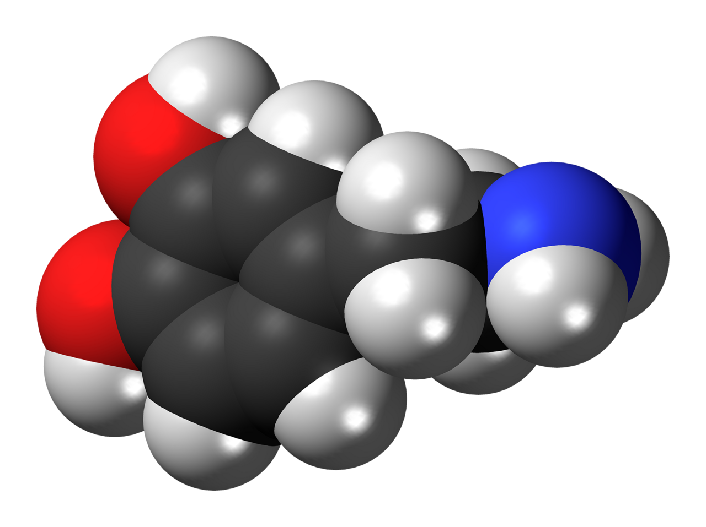

Happiness Hormones
← Back to Articles
Image: Wikimedia Commons (CC0)
Introduction
Happiness is not just a passing feeling — it is the result of a chemical reaction happening inside our bodies. Here is an overview of the four main happiness hormones, and how we can boost them in our daily lives.
1. Dopamine — The Reward Hormone
Dopamine is the reward hormone. It is released whenever you accomplish anything, whether it is small or big.
That is why breaking your goals into small, achievable tasks increases your sense of reward and keeps you motivated to continue.
2. Oxytocin — The Cuddle Hormone
Oxytocin is the cuddle hormone; it makes you feel safe and reassured, and it is especially high in women.
Close relationships and trust with loved ones are very helpful in boosting this hormone, so do not hesitate to connect with and embrace the people you love.
3. Endorphins — The Euphoria Hormones
Endorphins are hormones released when you feel pain, whether mild or greater, and they make you feel euphoric and cheerful.
Exercise helps release them, and crying is also helpful — the body releases endorphins to ease pain and improve mood.
4. Serotonin — The Confidence Hormone
Serotonin is the hormone of confidence and pride. It increases when you do something you are proud of.
And altruism — putting others before yourself — makes you feel proud; so your body rewards you by releasing this hormone.
Conclusion
A balance of these four hormones is the key to a happier, more stable life. Set small goals, get closer to your loved ones, exercise, and take pride in your achievements — your body will give you the happiness you deserve.
The original article was published on the blog Mafateeh Al-Hamdani | Al-Mukhaddram on 12/03/2022 by Mohammed Taher Hamdani.